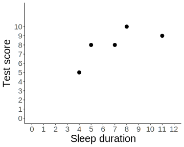
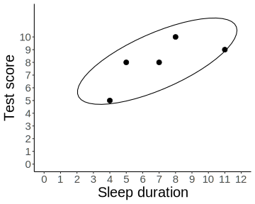
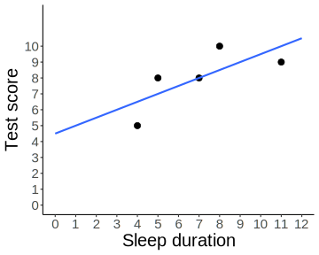
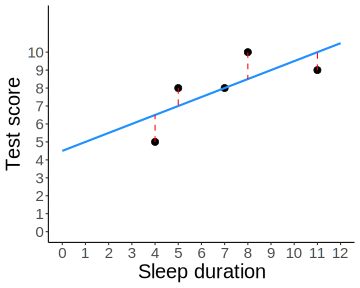

| Participant | Sleep duration | Test score |
|---|---|---|
| A | 4 | 5 |
| B | 5 | 8 |
| C | 7 | 8 |
| D | 8 | 10 |
| E | 11 | 9 |
| Participant | Sleep duration | Test score |
|---|---|---|
| A | 4 | 5 |
| B | 5 | 8 |
| C | 7 | 8 |
| D | 8 | 10 |
| E | 11 | 9 |


\(r = \dfrac{SP}{\sqrt{SS_X SS_Y}} = \dfrac{15}{\sqrt{30*14}} = 0.73\)


| Celcius | Fahrenheit |
|---|---|
| 0 | 32 |
| 10 | 50 |
| 20 | 68 |
| 30 | 86 |
| 40 | 104 |
| 50 | 122 |
\(Y = 1.8 X + 32\)
\[\begin{align} b &= \dfrac{SP}{SS_X} \\ &= \dfrac{15}{30} \\ &= 0.5 \end{align}\]
\[\begin{align} a &= M_Y - b * M_X \\ &= 8 - 0.5 * 7 \\ &= 4.5 \end{align}\]
| Sleep | Test score | \(\hat{Y}\) | \(Y - \hat{Y}\) | \((Y - \hat{Y})^2\) |
|---|---|---|---|---|
| 4 | 5 | 6.5 | -1.5 | 2.25 |
| 5 | 8 | 7.0 | 1.0 | 1.00 |
| 7 | 8 | 8.0 | 0.0 | 0.00 |
| 8 | 10 | 8.5 | 1.5 | 2.25 |
| 11 | 9 | 10.0 | -1.0 | 1.00 |
\[\begin{align} SS_{residual} &= \Sigma(Y - \hat{Y})^2 \\ &= \Sigma(2.25, 1, 0, 2.25, 1) \\ &= 6.5 \end{align}\]
\(s_{error} = \sqrt{\dfrac{SS_{residual}}{df}}=\sqrt{\dfrac{6.5}{5-2}} = 1.47\)
\(SS_{Y}\)
\(SS_{regression}\)
\(SS_{residual}\)
\(df_{Y}\)
\(df_{regression}\)
\(df_{residual}\)
\(SS_Y = \Sigma(Y - M_Y)^2\)
\(SS_{residual} = \Sigma(Y - \hat{Y})^2\)
\(SS_{regression} = SS_Y - SS_{residual}\)
\(df_Y = n - 1\)
\(df_{residual} = n - 2\)
\(df_{regression} = 1\)
\(MS_{regression}=\dfrac{SS_{regression}}{df_{regression}} \ \ \ \ \ \ \ \ \ \ MS_{residual}=\dfrac{SS_{residual}}{df_{residual}}\)
\(F = \dfrac{MS_{regression}}{MS_{residual}}\)
\(\alpha = .05\)
|
\(df_{numerator}\)
|
|||||||||
|---|---|---|---|---|---|---|---|---|---|---|
| \(df_{denominator}\) | 1 | 2 | 3 | 4 | 5 | 6 | 7 | 8 | 9 | 10 |
| 1 | 161.45 | 199.50 | 215.71 | 224.58 | 230.16 | 233.99 | 236.77 | 238.88 | 240.54 | 241.88 |
| 2 | 18.51 | 19.00 | 19.16 | 19.25 | 19.30 | 19.33 | 19.35 | 19.37 | 19.39 | 19.40 |
| 3 | 10.13 | 9.55 | 9.28 | 9.12 | 9.01 | 8.94 | 8.89 | 8.85 | 8.81 | 8.79 |
| 4 | 7.71 | 6.94 | 6.59 | 6.39 | 6.26 | 6.16 | 6.09 | 6.04 | 6.00 | 5.96 |
| 5 | 6.61 | 5.79 | 5.41 | 5.19 | 5.05 | 4.95 | 4.88 | 4.82 | 4.77 | 4.74 |
| 6 | 5.99 | 5.14 | 4.76 | 4.53 | 4.39 | 4.28 | 4.21 | 4.15 | 4.10 | 4.06 |
| 7 | 5.59 | 4.74 | 4.35 | 4.12 | 3.97 | 3.87 | 3.79 | 3.73 | 3.68 | 3.64 |
| 8 | 5.32 | 4.46 | 4.07 | 3.84 | 3.69 | 3.58 | 3.50 | 3.44 | 3.39 | 3.35 |
| 9 | 5.12 | 4.26 | 3.86 | 3.63 | 3.48 | 3.37 | 3.29 | 3.23 | 3.18 | 3.14 |
| 10 | 4.96 | 4.10 | 3.71 | 3.48 | 3.33 | 3.22 | 3.13 | 3.07 | 3.02 | 2.98 |
| Participant | Amount of sleep (\(X\)) |
Test score (\(Y\)) |
|---|---|---|
| A | 4 | 5 |
| B | 5 | 8 |
| C | 7 | 8 |
| D | 8 | 10 |
| E | 11 | 9 |
\(SS_{Y} = 14\)
\(SS_{residual} = 6.5\)
\(SS_{regression} = 7.5\)
\(df_Y = 4\)
\(df_{residual} = 3\)
\(df_{regression} = 1\)
| Participant | Amount of sleep (\(X\)) |
Test score (\(Y\)) |
|---|---|---|
| A | 4 | 5 |
| B | 5 | 8 |
| C | 7 | 8 |
| D | 8 | 10 |
| E | 11 | 9 |
\(MS_{regression} = \dfrac{SS_{regression}}{df_{regression}} = \dfrac{7.5}{1} = 7.5\)
\(MS_{residual} = \dfrac{SS_{residual}}{df_{residual}} = \dfrac{6.5}{3} = 2.17\)
| Participant | Amount of sleep (\(X\)) |
Test score (\(Y\)) |
|---|---|---|
| A | 4 | 5 |
| B | 5 | 8 |
| C | 7 | 8 |
| D | 8 | 10 |
| E | 11 | 9 |
\(F = \dfrac{MS_{regression}}{MS_{residual}} = \dfrac{7.5}{2.17} = 3.46\)
\(r^2 = \dfrac{SS_{regression}}{SS_Y} = \dfrac{7.5}{14} = 0.54\)
Longer sleep duration was associated with an increase in test performance, \(b = 0.5\). However, the association was nonsignificant; \(F(1, 3) = 3.46\), \(p > .05\).
CONCEPT is most closely related to CONCEPT
Residuals
Sum of squared residuals
\(s_{error}\)
\(MS_{regression}\)
\(SS\)
\(SP\)
\(s^2\)
\(s\)
\((X-M)\)
cover = {
const w = 1050
const h = 525
const x = d3.scaleLinear()
.domain([-2.7, 2.7])
.range([0, w])
const y = d3.scaleLinear()
.domain([-2.9, 2.8])
.range([h, 0])
const svg = d3.select("#cover").append("svg").attr("width", w).attr("height", h)
svg.selectAll("circle").data(ojs_point_data).enter()
.append("circle")
.attr("cx", d => x(d.xVal))
.attr("cy", d => y(d.yVal))
.attr("r", 5)
.style("fill", "var(--text-color")
svg.append("line")
.attr("x1", x(ojs_line_data[0]))
.attr("x2", x(ojs_line_data[1]))
.attr("y1", y(ojs_line_data[2]))
.attr("y2", y(ojs_line_data[3]))
.style("stroke", "lightblue")
.style("stroke-width", 3)
}temp = {
const w = 500
const h = 350
const margin = {top: 10, right: 10, bottom: 30, left: 50}
function f(c) {
return c * 1.8 + 32
}
const x = d3.scaleLinear()
.domain([-30, 60])
.range([margin.left, w-margin.right])
const y = d3.scaleLinear()
.domain([0, 150])
.range([h-margin.bottom, margin.top])
const xAxis = d3.axisBottom(x)
const yAxis = d3.axisLeft(y)
const svg = d3.select("#temp-plot").append("svg").attr("width", w).attr("height", h)
.attr("id", "temp-svg")
const points = [0,10,20,30,40,50]
const gx = svg.append("g")
.attr("transform", `translate(0, ${y(0)})`)
gx.call(xAxis)
const gy = svg.append("g")
.attr("transform", `translate(${x(-30)}, 0)`)
gy.call(yAxis)
const axisTitles = svg.append("g")
.style("fill", "var(--text-color)")
.style("font-size", "0.5em")
axisTitles.append("text").text("°C")
.attr("transform", `translate(${w / 2}, ${h})`)
axisTitles.append("text").text("°F")
.attr("transform", `translate(0, ${h/2})`)
svg.append("line")
.attr("x1", x(-18))
.attr("x2", x(60))
.attr("y1", y(f(-18)))
.attr("y2", y(f(60)))
.style("stroke", "var(--link-color)")
.style("stroke-width", 3)
svg.selectAll("circle").data(points).enter()
.append("circle")
.attr("cx", d => x(d))
.attr("cy", d => y(d * 1.8 + 32))
.attr("r", 5)
.style("fill", "var(--text-color)")
const circle = svg.append("g").append("circle")
.attr("r", 8)
.style("fill", "none")
.style("stroke", "red")
.style("stroke-width", 2)
.style("stroke-dasharray", [3,3])
const path = svg.append("path")
.style("stroke", "red")
.style("stroke-width", 2)
.style("stroke-dasharray", [5, 5])
.style("fill", "none")
const labels = svg.append("g").style("font-size", "0.6em").style("fill", "var(--text-color)")
const label_c = labels.append("text")
const label_f = labels.append("text")
<!-- const overlayRect = svg.append('rect') -->
<!-- .style("fill", "none") -->
<!-- .style("pointer-events", "all") -->
<!-- .attr("x", x(-30)).attr("y", y(150)) -->
<!-- .attr('width', w - margin.left - margin.right) -->
<!-- .attr('height', h - margin.top) -->
<!-- .on('mousemove', mousemove) -->
const round = d3.format(".1f")
d3.select(".temp-table").selectAll("tr").on("mouseover", getNumberFromTable)
function getNumberFromTable() {
try {
var num = d3.select(this).select("td")._groups[0][0].innerHTML;
} catch {} finally {updateOverlay(num);}
}
function updateOverlay(xCoord) {
if(isNaN(xCoord)) return false;
var x0 = x(xCoord);
var y0 = y(f(xCoord));
circle
.attr("cx", x0)
.attr("cy", y0)
var line = d3.line()
path.attr("d", line([[x(-30),y0],[x0,y0],[x0,y(0)]]))
label_c.text(round(xCoord) + "°C").attr("x", x(xCoord)).attr("y", y(0))
label_f.text(round(f(xCoord)) + "°F").attr("x", x(-30)).attr("y", y0)
}
const plotParams = {xMin: -30, xMax: 60,
yMin: 0, yMax: 150}
plotParams.xRange = plotParams.xMax - plotParams.xMin;
plotParams.yRange = plotParams.yMax - plotParams.yMin;
svg.on("mousemove", mousemove)
function mousemove(e) {
var elem = document.getElementById("temp-svg");
var svgX = Math.round(elem.getBoundingClientRect().x);
var svgW = elem.getBoundingClientRect().width;
<!-- console.log(svgX); -->
var pixel = d3.pointer(e)[0];
<!-- console.log(pixel); -->
<!-- var celcius = pixel_to_x(pixel - svgX, svgW); -->
var celcius = x.invert(pixel);
console.log("svgX: " + svgX + "; pixel: " + pixel + "; adjusted pixel: " + (pixel - svgX));
celcius = Math.round(celcius * 10)/10;
celcius = Math.max(-18, celcius);
updateOverlay(celcius);
}
function pixel_to_x(pixel, screenWidth) {
var displayRatio = screenWidth / w;
var panelWidth = screenWidth - margin.left*displayRatio - margin.right*displayRatio;
var b = plotParams.xRange / panelWidth;
var a = plotParams.xMin - b * margin.left*displayRatio;
var x = pixel * b + a;
console.log("pixel: " + pixel + "; celcius: " + x);
return (x);
}
updateOverlay(0);
}🥳
hi hi
changable_chart = {
const w = 900;
const h = 500;
const margin = {top: 20, right: 20, left: 110, bottom: 75}
const x_values = [4,5,7,8,11]
const y_values = [5,8,8,10,9]
const yhat_values = [0,0,0,0,0]
const data = [{xVal: 4, yVal: 5},
{xVal: 5, yVal: 8},
{xVal: 7, yVal: 8},
{xVal: 8, yVal: 10},
{xVal: 11, yVal: 9}]
const aInput = d3.select("#a-control")
const bInput = d3.select("#b-control")
aInput.on("input", drawFitLine);
bInput.on("input", drawFitLine);
const x = d3.scaleLinear()
.range([margin.left, w - margin.right - 300])
.domain([0, 12])
const y = d3.scaleLinear()
.range([h - margin.bottom, margin.top])
.domain([0, 10])
const xAxis = d3.axisBottom(x);
const yAxis = d3.axisLeft(y);
const svg = d3.select("#error-plot-container").append("svg")
.attr("width", w)
.attr("height", h)
const axes = svg.append("g")
const axisFontSize = "0.7em"
axes.append("g").attr("transform", `translate(0, ${h - margin.bottom})`).call(xAxis).style("font-size", axisFontSize).attr("font-family", "Times New Roman");
axes.append("g").attr("transform", `translate(${margin.left}, 0)`).call(yAxis).style("font-size", axisFontSize).attr("font-family", "Times New Roman");
const sumSquaresPlot = svg.append("g")
sumSquaresPlot.attr("transform", `translate(500, 0)`)
const axisTitles = svg.append("g")
.style("font-size", "0.8em")
.style("font-family", "Times New Roman")
.style("fill", "var(--text-color)")
axisTitles.append("text")
.attr("transform", `translate(${margin.left + (w - margin.left - margin.right) / 2}, ${h - 10})`).text("Sleep duration")
.attr("text-anchor", "middle");
axisTitles.append("text")
.attr("transform", `translate(0, ${margin.top + (h - margin.top - margin.bottom) / 2})`)
.text("Score")
const residuals = svg.append("g")
residuals.selectAll("line").data(data).enter()
.append("line")
.attr("x1", d => x(d.xVal))
.attr("x2", d => x(d.xVal))
.attr("y1", d => y(d.yVal))
<!-- .attr("y2", d => y(d.yVal)) -->
.style("stroke", "red")
.style("stroke-width", 2)
.attr("stroke-dasharray", [5, 3])
const fitLine = svg.append("line")
.style("stroke", "dodgerblue")
.style("stroke-width", 3)
const dots = svg.append("g")
const squares = svg.append("g")
const ssResidualSquare = sumSquaresPlot.append("g").append("polygon")
.style("fill", "plum")
.style("opacity", 0.8)
dots.selectAll("circle").data(data).enter().append("circle")
.attr("cx", d => x(d.xVal))
.attr("cy", d => y(d.yVal))
.attr("r", 5)
.style("fill", "var(--text-color)")
squares.selectAll("polygon").data(data).enter()
.append("polygon")
.style("fill", "plum")
.style("opacity", 0.5)
function drawFitLine() {
var a = Number(aInput.property("value"));
d3.select("#a-output").text(a);
var b = Number(bInput.property("value"));
d3.select("#b-output").text(b);
var yhat1 = a
var yhat2 = b * 12 + a
fitLine
.attr("x1", x(0))
.attr("x2", x(12))
.attr("y1", y(yhat1))
.attr("y2", y(yhat2))
var ssResidual = 0;
for(var i = 0; i < data.length; i++) {
var yHat = b * data[i].xVal + a;
var residual = data[i].yVal - yHat
data[i].yHat = yHat;
data[i].res = residual;
ssResidual += Math.pow(residual, 2);
}
residuals.selectAll("line")
.attr("y2", d => y(d.yHat))
squares.selectAll("polygon")
.attr("points", d => [[x(d.xVal), y(d.yVal)],
[x(d.xVal), y(d.yHat)],
[x(d.xVal + Math.abs(d.res)), y(d.yHat)],
[x(d.xVal + Math.abs(d.res)), y(d.yVal)]])
ssResidualSquare
.attr("points", [[x(0), y(10)],
[x(0), y(10 - Math.sqrt(ssResidual))],
[x(0 + Math.sqrt(ssResidual)), y(10 - Math.sqrt(ssResidual))],
[x(0 + Math.sqrt(ssResidual)), y(10)]])
}
drawFitLine();
// this is the dashed outline of the minimum SSresidual
sumSquaresPlot.append("polygon")
.attr("points", [[x(0), y(10)],
[x(0), y(10 - Math.sqrt(6.5))],
[x(Math.sqrt(6.5)), y(10 - Math.sqrt(6.5))],
[x(Math.sqrt(6.5)), y(10)]])
.style("fill", "none")
.style("stroke", "black")
.style("stroke-dasharray", [5, 3])
sumSquaresPlot.append("text")
.text("LSE solution")
.attr("x", x(0))
.attr("y", y(10.05))
.style("font-size", "0.4em")
sumSquaresPlot.append("text")
.text("SSresidual")
.attr("x", x(0))
.attr("y", y(9.6))
.style("font-size", "0.5em")
.style("fill", "white")
}